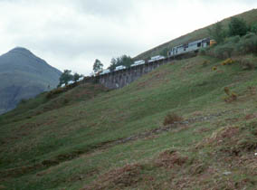

Crianlarich to Bridge of Orchy -
Tuesday, May 29
Since it had rained a lot the
previous afternoon, evening, and night, and the Bogle Glen path
had already been wet and marshy underfoot, we walked back into
Crianlarich and up the (stonier and drier) path from the station.
We rejoined the Way, and kept on for several pleasant miles
through conifers - mostly larches with their soft needles, which
Andy had just a few days earlier learned a lot about in the
Boston Arboretum. We had good views both back toward Crianlarich
and forward up Strath Fillan.
On the hill at the right side of the
left picture above is the bunny shape in the trees that we saw
from our Crianlarich B&B. With our binoculars we watched
people walking up the hillside above the trees, and contemplated
doing it ourselves, since we had a free afternoon. But it was
actually rather far away, and we didn't have a lot of hours, so
we resigned ourselves to just watching. This next day, the bunny
was still in sight for several hours. We walked through more
forests and moor-like undergrowth, on a hill, then down to the
Strath Fillan Valley. The site of St. Fillan's Priory was closed
off, for foot and mouth reasons, and we were sent around the edge
of the farm. We went through the area called Dalrigh, where
Robert the Bruce was defeated in 1306. There's a lochan, where
his men supposedly threw their heavy weapons as they fled. There
are also occasional modern structures -- art, perhaps???
|
|
We stopped in
at the Green Welly Stop in Tyndrum, just for fun. In
fact, we spent a long time, poking around the shops and
having a lunch. A couple of us had "heather
ale", which they said had been made in that area
since 2000 B.C. Then, after passing a sign saying saying
"Stop! Last shop on the West Highland Way until
Kinlochleven, 28 miles", we headed north again. The scenery became quite different.
We were out of the forests; it was open hillsides and
distant views. We walked along the sides of Beinn Odhar
for a good while. Beinn Dorain was farther away, and
stayed in sight almost all afternoon, getting larger and
larger. We enjoyed seeing a train far away, a small speck
on the side of Beinn Dorain, as it came in our direction.
It disappeared while it went around the big horseshoe
between Beinn Dorain and Beinn Odhar. We waited and
waited, till it finally reappeared just above us.
|
|
|
|
|

|
| The walk to
Bridge of Orchy continued to be pleasant, along the old
military road, with open views of mountains all around.
We walked along the lower slopes of Beinn Dorain, staying
close to the railway all the way to Bridge of Orchy.
Bridge of Orchy consists of the railway station, a few
houses, and the hotel - plus the bunkhouse, where we
stayed. It was rather like a youth hostel, except that
there were rooms for two or three, instead of big dorm
rooms. Dinner at the hotel was good. Several of us had
the excellent asparagus risotto. |
| |
 |
|